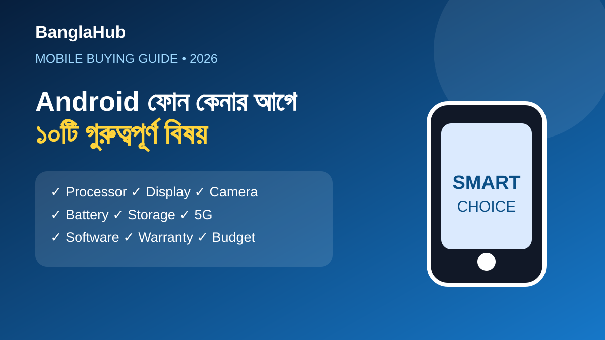

২০২৬ সালে Android ফোন কেনার আগে ১০টি গুরুত্বপূর্ণ বিষয়
নতুন Android ফোন কেনার সময় শুধু RAM বা camera megapixel দেখে সিদ্ধান্ত নেওয়া ঠিক নয়। বাজেট, দৈনন্দিন ব্যবহার এবং দীর্ঘমেয়াদি প্রয়োজন মিলিয়ে কয়েকটি বিষয় যাচাই করলে ভুল কেনার ঝুঁকি কমে।

১. Processor
Processor-এর model ও generation দেখুন। Gaming, editing বা সাধারণ browsing—আপনার ব্যবহারের সঙ্গে performance level মিলিয়ে নিন।
২. Display
Panel type, resolution, brightness এবং refresh rate দেখুন। 90Hz বা 120Hz scrolling আরও smooth করতে পারে।
৩. Camera
Megapixel-এর পাশাপাশি sensor, stabilization, image processing এবং low-light performance বিবেচনা করুন।
৪. Battery ও charging
শুধু battery capacity নয়, বাস্তব battery life, charging speed এবং charger availability দেখুন।
৫. Storage ও RAM
বেশি ছবি, ভিডিও ও game রাখলে বেশি storage সুবিধাজনক। RAM-এর পাশাপাশি software optimization-ও গুরুত্বপূর্ণ।
৬. 5G compatibility
আপনার অপারেটরের supported bands এবং ফোনের modem compatibility যাচাই করুন।
৭. Software update
নির্মাতা কতদিন security update ও major Android update দেবে তা সম্ভব হলে official source থেকে যাচাই করুন।
৮. Warranty
Official warranty, invoice এবং after-sales service সম্পর্কে পরিষ্কার ধারণা নিন।
৯. মোট খরচ
ফোনের দামের সঙ্গে case, charger বা accessories-এর অতিরিক্ত খরচও হিসাব করুন।
১০. আপনার বাস্তব প্রয়োজন
শুধু specification বেশি হলেই ফোনটি আপনার জন্য ভালো হবে না। আপনি camera, gaming, battery বা সাধারণ ব্যবহার—কোনটিকে বেশি গুরুত্ব দেন সেটিই শেষ সিদ্ধান্তে সবচেয়ে গুরুত্বপূর্ণ।
FAQ
৮GB RAM কি যথেষ্ট?
অনেক সাধারণ ব্যবহারকারীর জন্য ৮GB যথেষ্ট হতে পারে; heavy multitasking হলে বেশি RAM উপকারী হতে পারে।
শুধু বেশি megapixel-এর camera কি ভালো?
না। Sensor ও image processing-সহ পুরো camera system বিবেচনা করা উচিত।
আরও পড়ুন: ফোনের battery দ্রুত শেষ হওয়ার কারণ · 5G ফোন কেনার গাইড